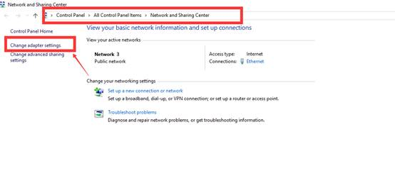

Tech Troubleshooting FAQ
1. Kicked out of classroom
Description: Classroom loads continually, teacher or student is kicked out of classroom
Issue： Unstable network
Resolution：
1. Use Google Chrome
2. Refresh the tab
3. Re-start computer
4. Re-start router
5. Plug in to router manually using an ethernet cord
6. Contact Internet Service Provider to upgrade Internet package/connection
2. Video delay or resolution
Description: Teacher or student video is delayed
Reason：1）Slow network speed
2）Out dated video driver
Resolution：
1. Use Google Chrome
2. Refresh the tab
3. Re-start computer
4. Re-start router
5. Plug in to router manually using an ethernet cord
6. If using a PC, download the Lot Client (see Part 1 details below)
7. Upgrade your video driver (see Part 2 details below)
8. Contact Internet Service Provider to upgrade Internet package/connection
Part 1: Upgrade Video Driver
1. Go to the Control Panel on your computer.
2. In Control Panel —> System and Security, click on the Device Manager
3. In Device Manager, click on Display Adapters. Choose “Update Driver Software”.
Part 2: Installation Method for Lot Client (PC only)
1.
Go to Google Drive to download the installation
package
https://drive.google.com/open?id=0B516N4U_VCDWRDd3bFJCT3daaFE
2. Follow the steps by clicking yes and accept. Enter the following username and password in the authentication box
e-mail: yunwei@duobei.com
password: duovip2015
3. Re-boot PC after completing all steps.
3. Echo in the classroom
Description: Teacher hears their voice or the student’s voice with an echo or screeching sound in the classroom
Reason：Student or teacher is not wearing a headset
Solution：Wear a headset with mic when teaching. Ask your student to wear a headset as well, or contact the Education Department to request that the student uses a headset.
4. Student sound issues
Description: Student’s sound is too loud or quiet, teacher has a difficult time hearing student
Reason: Poor student mic quality or sound adjustment
Solution:
1. Hover your mouse over the student’s screen
2. Click settings

3. Adjust the student’s microphone
4. If you still cannot hear the student, please reset your Chrome.
Paste "chrome://settings/resetProfileSettings" to your Brower and click “Reset”.
5. Close Chrome and log in again.
5. Unstable video
Description: Student or teacher video flashes in and out, cuts off
Reason： 1) Unstable network
2) Full browser cache
Resolution：
1. Use Google Chrome
2. Refresh the tab
3. Re-start computer
4. Re-start router
5. Plug in to router manually using an ethernet cord
6. Contact Internet Service Provider to upgrade Internet package/connection
4. Classroom will not load
Description: Student or teacher video flashes in and out, cuts off
Reason： 1) Unstable network
2) Incorrect browser cache
3) Speed test result shows disabled RTMP
Resolution：
1. Use Google Chrome
2. Refresh the tab
3. Re-start computer
4. Re-start router
5. Plug in to router manually using an ethernet cord
6. Wipe the cache and reboot the browser (see Part 1 details below)
7. Change to DNS server 8.8.8 and restart your computer (if speed test shows disabled RTMP) (see Part 2 details below for PC, Part 3 details for Mac)
Part 1: Cleaning the Browser
1. Input the website：chrome://settings/clearBrowserData
2. Clear browsing data by selecting the following- browsing history, download history, cookies and the site plugin data, and cached images and files.
3. Restart your computer.
Part 2- Change DNS (PC only)
1. Right click the desktop network icon to open the Network and Sharing Center
2. You will be redirected to the Control Panel. Click Control Panel —> All Control Panel Items —> Network and Sharing Center.
3. Click C\change adapter settings on the left portion of the Window.

4. Click to choose the Internet connection that you are using.
5. Click the Properties button.
6. Click and highlight Internet Protocol Version 4 (TCP/IPv4) and click Properties. Enter the new DNS addresses (8.8.8.8) and click OK and close out of all other windows.
Part 3- Change DNS (Mac only
1. From the Apple menu, select System Preferences=.
2. Choose Network from the System Preferences menu.
3. By detault, the active Internet connection is already selected. Click Advanced to access the selected interface’s DNS settings.
4. Click the DNS tab. The window shown below appears. Click the + button to add a new DNS server. To use Google DNS, enter 8.8.8.8
Click OK and then apply.
6 . No sound in classroom
Description: Teacher can’t hear student
Reason： 1) Headset doesn’t work
2) Sound driver is not updated
Resolution：
1. Make sure your headset is working properly (test on another device and replace headset if necessary)
2. Use Google Chrome
3. Refresh the tab
4. Re-start computer
5. Re-start router
6. Plug in to router manually using an ethernet cord
7. Update the sound driver (see Part 1 details below)
Part 1: Updating the Sound Driver
1. Go to the Control Panel on your computer.
2. In Control Panel —> System and Security, click on the Device Manager
3. In Device Manager, click on Display Adapters. Choose “Update Driver Software”.
4. Choose to search automatically for updated driver software.
5. Restart your computer.
8. Additional classroom sound issues
Description: Classroom makes screeching, feedback, student or teacher sounds “like a monster”
Reason： 1) Internal microphone is not working or is not updated
Resolution：
1. If you are using a headset with external mic, make sure it is working properl
2. Use Google Chrome
3. Refresh the tab
4. Re-start computer
5. Re-start router
6. Plug in to router manually using an ethernet cord
7. Accelerate internal mic hardware (see Part 1 details below)
Part 1: Internal mic hardware acceleration
1. Click the volume icon on your screen (loudspeaker icon)
2. Choose Recording devices
3. Double click internal microphone
4. Choose the Advanced tab and set parameters as shown in the image below:
5. Enter classroom and right click on PPT. Choose Settings form the selection menu.
6. Uncheck “Enable hardware acceleration”
7. Reboot your PC.
12．Flash crash
Description: Notification that the flash plug-in has crashed, or is no longer working
Reason：Flash is not updated
Resolution：
1. Use Google Chrome
2. Wipe the cache partition and reboot the browser. Input the following link:
chrome://settings/clearBrowserData
3. Choose “Clear Browsing Data”
4. Close and re-start Chrome
1. If the above operation doesn’t work，please reset the browser. Input the following link: chrome://settings/resetProfileSettings
2. If your flash still does not work, change browsers and re-install Chrome when time allows
13. Voice lag
Description: One party speaks and must wait to be heard or hear the other party (voice lag or delay)
Reason：Incorrect cache
Resolution：
1. Use Google Chrome
2. Wipe the cache partition and reboot browser by inputting the following link in the address bar: chrome://settings/clearBrowserData in address bar, click the button for clearing the browser data and then reboot the chrome.
3. Choose “Clear browsing data” and re-boot Chrome
4. If you still experience a voice lag or delay, please re-start your computer.
5. If this still does not work, please contact your Internet Service Provider.
1.教务老师正在联系家长，请家长接电话！
The Firemen are calling your parents now. Please tell your parents to answer the phone.
2.抱歉，老师现在听不到你的声音，请家长过来帮忙，可以吗？
Sorry, teacher can’t hear you. Please ask your parents to come and help.
3.抱歉，老师现在看不到你，请家长过来帮忙，可以吗？
Sorry, teacher can’t see you. Please ask your parents to come and help.
If the kid is at home alone use these.
4.抱歉，老师现在听不到你的声音，你可以尝试刷新。
I can’t hear you. You can refresh the screen.
5.抱歉，老师现在看不到你，你可以尝试刷新。
I can’t see you. You can refresh the screen.
And if it is a trial class, but the kid can’t use the mouse, teachers should use this:
6. 你会用鼠标连线吗？
Are you able to use the mouse?